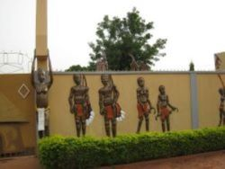

Musée Sogossira

Situé au coeur de la ville de bobo dioulasso le musée sogossira Sanon a ouvert ses portes en mars 1990.
En effet ce musée qui est l'objet de très nombreuses visites
toyurristiques a vu le jour grâce aux efforts conjugués de trois communautés
a savoir la communauté bobo , peulh et celle sénoufo. Ainsi , ces trois communautés
ont décidé de transformer le bâtiment ,qui est colonial et qui retrace aussi
l'histoire avec le colon francais en musée.Venez decouvrir
ci dessous ce qu'habrite ce magnifique musée.